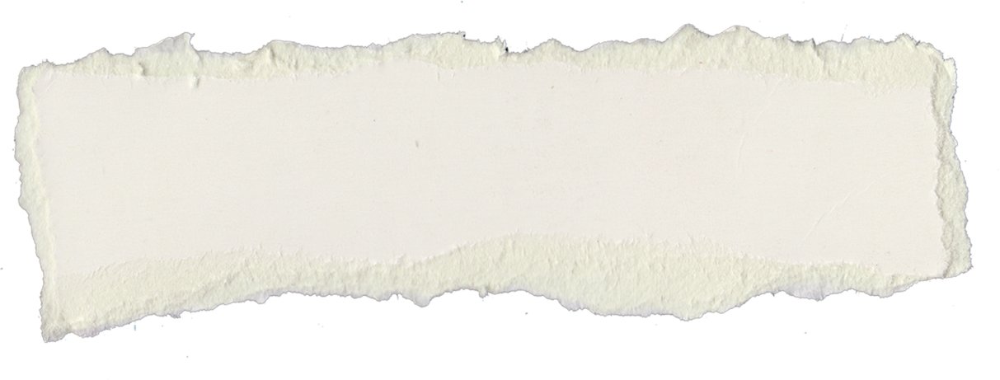
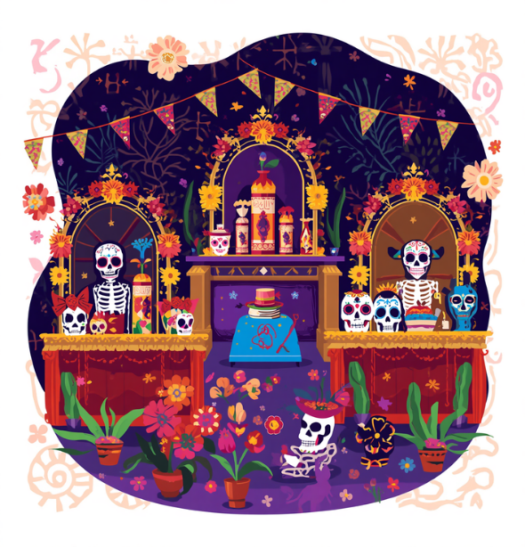
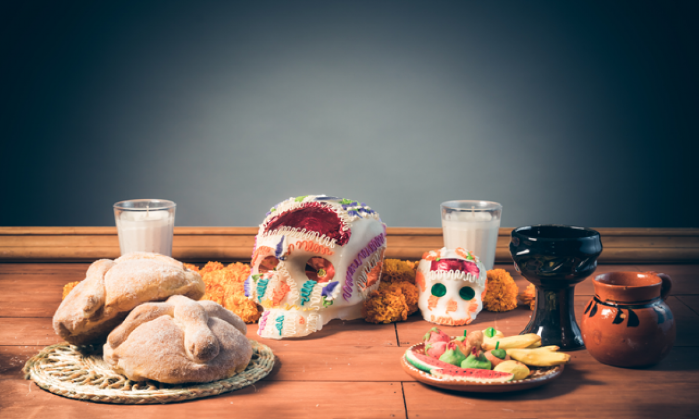

¿Qué es el dia de los muertos?

Aprende sobre la historia del Día de Muertos. Descubre los orígenes milenarios de esta festividad y comprende por qué, año tras año, miles de personas honran la memoria de sus difuntos en una celebración llena de vida.

Descubre el corazón del Día de los Muertos: la ofrenda. Conoce el significado profundo de cada elemento, desde el brillo de la flor de cempasúchil hasta el aroma del copal, y aprende cómo estos altares guían a las almas de regreso a casa.


El Sabor del Recuerdo
En el Día de los Muertos, la muerte tiene un sabor dulce, picante y reconfortante. Los altares y las mesas familiares se llenan con los platillos favoritos de quienes partieron. Descubre el misticismo detrás del pan de muerto, las calaveritas de azúcar y las recetas tradicionales.